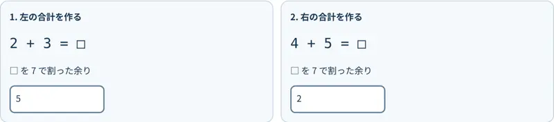
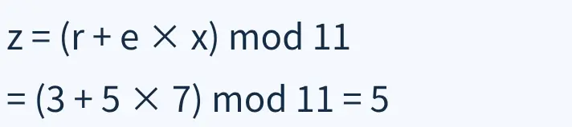
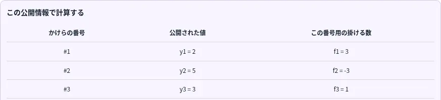
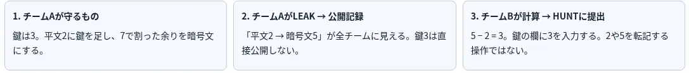

講座で知る
秘密分散・秘密計算・
ゼロ知識証明などの
考え方に触れる。
暗号バトル
Cryptography Drills / GameDay
with TenkaCloud
秘密を守る。
公開する。
相手の情報を読む。
冨田進 / susumutomita
冨田です。講座で学んだ暗号を、小さな数で手を動かして使う「暗号バトル」を作りました。単に早く問題を解くだけでなく、情報を公開して急ぐか、計算して守るか、相手の公開情報を使うかを選ぶゲームです。
講座の一度きりの学習を、繰り返し使える練習場へ。
秘密分散・秘密計算・
ゼロ知識証明などの
考え方に触れる。
式を追い、手で計算する。
まずは時間制限なしで。
締切と公開リスクを見て、
次の一手を自分で選ぶ。
講座で知った原理を、まず時間制限のない練習で試し、それを対戦での判断につなげます。目標は、専門用語を答えられることではなく、何を公開すると何が分かってしまうのかを、自分の計算で理解することです。
シーザー暗号の固定例：0〜6の数字を使い、7で割った余りを取る。
平文2を、鍵で暗号化する。
自分で計算して
非公開提出する方法もある。
鍵3そのものは公開しない。
計算を省く代わりに、
相手へ材料を渡す。
鍵の回答欄に3を入力。
平文2や暗号文5ではない。
正しい鍵なら攻撃成功。
説明用の固定値。実戦の文字数・必要な材料・得点は、お題とHUNT画面に従います。
まず、LEAKとHUNTを同じ数字で説明します。チームAは秘密の鍵3を持ち、平文2を暗号化します。この例では7で割った余りを使うので、答えは5です。自分で計算する代わりにLEAKを選ぶと、システムが答え、その「平文2から暗号文5」という対応が全チームに公開されます。鍵3を直接渡すわけではありません。ですが、チームBは5引く2で、鍵は3と計算できます。HUNTに入力するのは、この鍵3です。すでに見えている平文2や暗号文5ではありません。つまりLEAKは計算時間を省く代わりに、相手が鍵を求める材料を渡す操作です。
「まず1問体験」は、時間制限・得点・減点なし。
暗号文 (2, 4) ＋ (3, 5)

左：2 + 3 = 5
右：4 + 5 = 9
7で割った余りは2
(5, 2)
中身の合計ではなく、
合計を隠した暗号文。
暗号文を開けずに計算する練習もあります。これは実際の「まず1問体験」の画面です。左の2と3を足して5。右の4と5を足して9、7で割った余りは2。答えは5と2の組です。中身の合計ではなく、合計を隠した暗号文を作っています。完全準同型暗号全体ではなく、加算の性質を追う模型です。
Schnorrの固定例：秘密 x = 7、今回だけの乱数 r = 3。

送らないもの
検証式の左右は
9 = 9
xは証明用の別の秘密。シェアの値を知る証明ではありません。
秘密候補は最大11通りの教育模型で、実用の本人認証としての安全性はありません。
PROVEでは、Schnorrの会話を手計算します。最初にaを固定し、相手からeを受け取り、応答zを返します。秘密xと乱数rは送らず、公開された式で検査できます。ただし、このxは証明用の別の数で、秘密分散のかけらを知っていることの証明ではありません。また、小さい数の教育模型なので、実用の本人認証としての安全性は主張しません。
同じチーム・同じ組の異なる番号。この例は5個中3個で復元し、2個では決まらない。

チームAのLEAKで見える
#1 = 2
#2 = 5
#3 = 3
チームBがHUNTで答える
元の秘密 1
秘密分散のHUNTでは、答えるものが鍵から「元の秘密」に変わります。この例では、チームAの秘密1を5個のかけらに分けています。LEAKで公開されるのは、かけらの番号と値です。同じ組の異なる3個、番号1が2、番号2が5、番号3が3まで公開されたとします。チームBは画面の係数を使って、3かける2、引く3かける5、足す3を計算します。結果はマイナス6。7を足した1が元の秘密です。HUNTの回答欄に入れるのは、その1です。同じ番号を繰り返し公開しても3個には数えません。公開するものと、そこから復元して答えるものは、違うということです。
攻略ヒントを買わなくても、基本ルールが分かるように。

守る対象 → 公開する対象
公開材料 → 求める答え
平文2 → 暗号文5 → 鍵3
プレー中のフィードバックで、このつながりを理解する前にHUNTを求めていたことが分かりました。そこで、LEAKの説明を「守る対象、公開する対象、相手が答える対象」の順に修正しました。HUNTの入口には、いま説明した同じ数字の例を無料で表示します。基本ルールを有料ヒントに隠しません。日本語と英語で、読んだら閉じられ、計算欄を作り直さない構成です。この画面は修正した実コンポーネントの単体表示です。修正PRはマージ済みですが、本番対戦への反映確認とは区別しています。
暗号の計算・証明・公開情報からの復元を、
一つの対戦型教材につないだ。
最初の1問 / 公開リスクの理解 / 対戦の楽しさ
来年以降の講座でも、繰り返し使える形を目指す。
暗号の計算、証明、公開情報からの復元を、繰り返し使える教材として残したいと考えています。次は初学者に試してもらい、何を公開し、何をHUNTで答えるのかを、説明を探さず理解できるか確認します。学習効果や勝率の改善は、実装できたこととは分けて測定します。コードは公開しています。ありがとうございました。ここで本編を終了します。
| 方式 | 相手に見える材料 | HUNTで提出するもの |
|---|---|---|
| 秘密分散 | 同じ組の、異なる番号のかけら | 復元した元の秘密 |
| シーザー | 平文と暗号文の対応 | ずらす数＝鍵 |
| Vigenère | 各鍵位置の平文と暗号文の対応 | 3個の鍵を位置1・2・3の順で |
| Rotor | 元の4文字と暗号の4文字 | 車輪の初期位置 a・b |
| RSA | 公開鍵 n / e。LEAK不要 | nを作る異なる素数2個 |
| じゃんけん | 過去の同じ r の開封と、今回の封じた数 | 今回の手の予測。開封後に採点 |
| 旧数独模型 | 同じ印の証明で公開されたマス | 元の数独の解（旧試合のみ） |
じゃんけんは「今回も r を使い回した」という仮定。過去の再利用だけで成功は保証されません。
RSAで入力するのは秘密指数d、平文m、暗号文cではなく、nの異なる素因数2個です。じゃんけんは過去の再利用を根拠にした予測で、今回の再利用まで確定しているわけではありません。HUNTを「すべてLEAKで発生する攻撃」と説明しないでください。
新規試合のお題の回答期限は3分。最終得点を競います。
通常のお題の例。
お題に合う計算をして提出。
通常のお題の例。
公開した情報は相手の材料に。
通常の期限切れ減点。
合計得点の下限は0点。
練習問題には得点・減点・期限がありません。ただし、開始済みの本戦の時計は練習中も進みます。
正解30点・LEAK10点・期限切れ15点の減点は通常例です。公開そのものが条件のお題では、LEAKにも満額が付きます。何でもPROVEで代替できるわけではなく、お題に表示される方法がルールです。
暗号文の加算と、復号後の合計の対応。
Schnorrの公開検証、模擬会話、乱数再利用時の秘密抽出。
公開されたかけらからの秘密復元。
LEAKの公開対象とHUNTの回答対象をつなぐ。
加算の模型 ≠ 完全準同型暗号全体。
秘密を送らない ≠ 小さい群で安全な本人認証。
Schnorrのx ≠ シェアの値。
CI成功・単体画面の確認 ≠ 本番対戦・学習効果の検証。
PR #877はCI成功を確認してマージ。スクリーンショットは教材コンポーネントの独立表示です。
本番AWS・認証・オンライン対戦の確認や、初心者の勝率・学習効果の測定は別途必要です。
画面は実コンポーネントを説明用の固定データで表示したものです。本番画面全体の撮影や、掲載した数字でオンライン採点APIを通した証拠ではありません。UI改善の実装と、学習効果の実証を分けて説明します。
画面素材：ACP2026発表資料v2に掲載した、実コンポーネントのローカル表示を再利用。
Web掲載では表示領域の抜粋とサイズ最適化のみ行い、画像中の数字や文字は書き換えていません。
出典リンクは、マージしたコミット6f8a53fに固定しています。新規試合と旧試合の違い、教材模型と実用方式の違いはソースで確認できます。
![コードと教材のGitHubリポジトリを開くQRコード]()